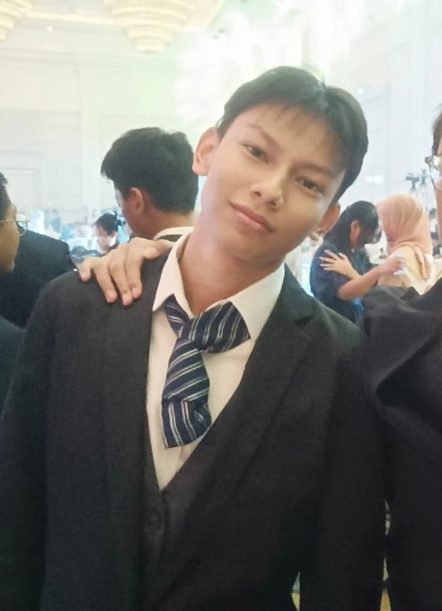
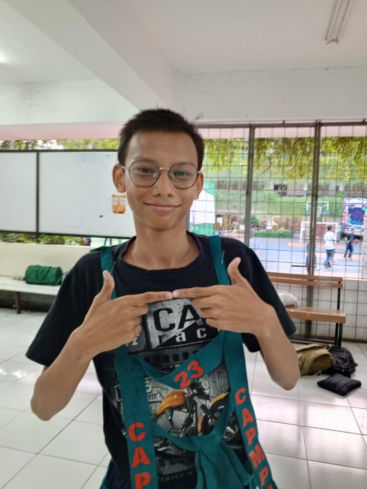
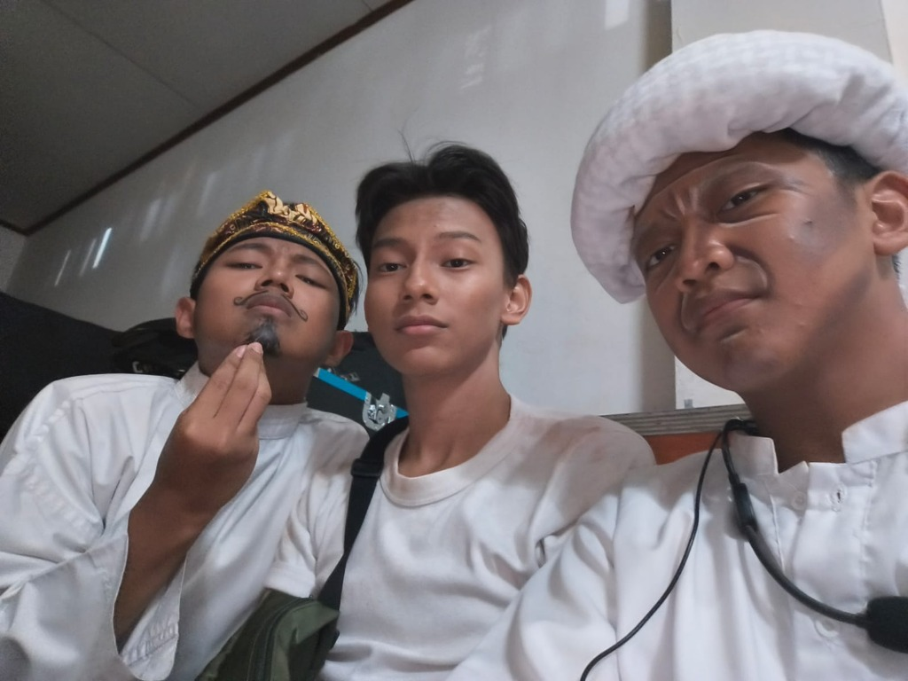
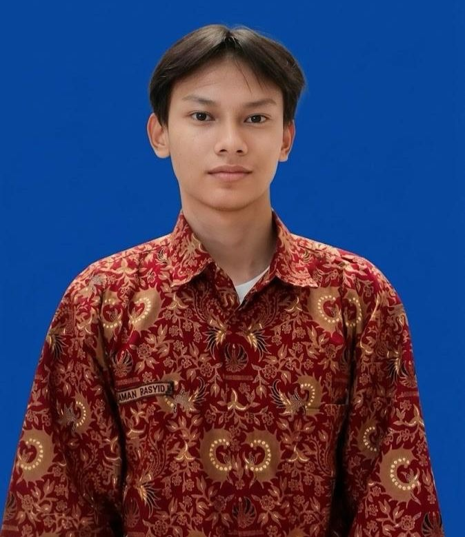
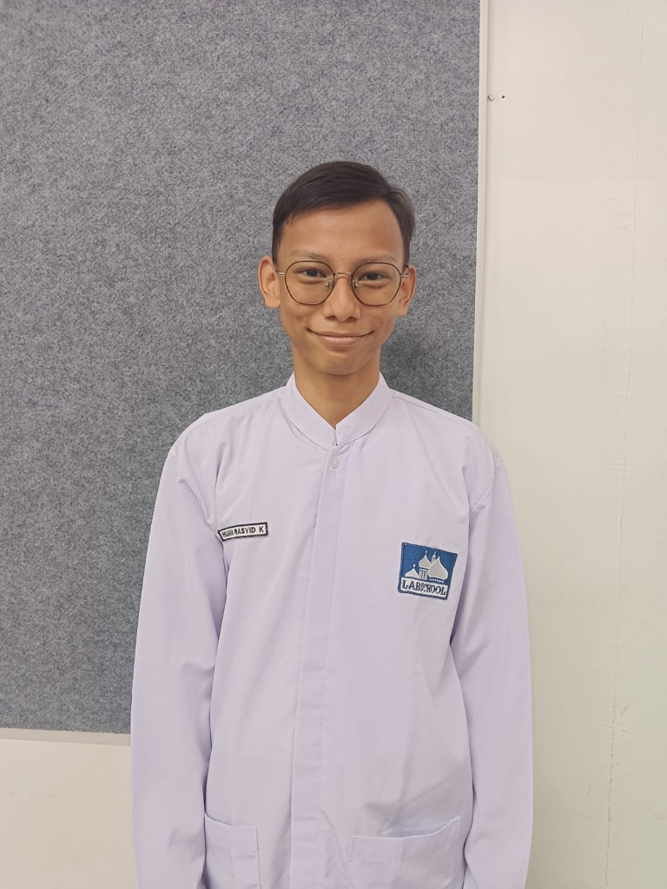

Hilman Rasyid Kaizan
Siswa SMA Negeri 70 Jakarta • Peneliti Muda • Penggiat Sains Kebumian & Sastra
Siswa SMA Negeri 70 Jakarta dengan fokus studi pada sains kebumian, metodologi riset ilmiah, dan literatur sastra. Mengapresiasi keindahan logika empiris melalui penelitian kuantitatif serta keagungan harmoni musik klasik karya Jean Sibelius, Beethoven, Bach, dan Brahms.
Tentang Saya
Stay Hungry. Stay Foolish.
Eksplorasi Keilmuan, Riset Kuantitatif & Apresiasi Seni
Perkenalkan, nama saya Hilman Rasyid Kaizan. Saat ini saya menempuh pendidikan sebagai siswa di SMA Negeri 70 Jakarta. Saya memiliki ketertarikan mendalam terhadap eksplorasi sains, kebumian, serta metode penalaran ilmiah berbasis data.
Bagi saya, riset bukan sekadar menyusun angka, melainkan ikhtiar sistematis untuk memecahkan persoalan nyata. Di sela-sela aktivitas akademik, saya menemukan kejernihan berpikir melalui literatur fiksi berkualitas dan kedalaman emosi simfoni klasik.
Metodologi Riset Ilmiah
Penyusunan karya tulis berbasis data kuantitatif, analisis kuesioner terstruktur, dan perancangan proposal riset aplikatif.
Olimpiade Sains Kebumian
Pendalaman komprehensif struktur geologis, proses atmosferik, dinamika oseanografi, serta sistem astronomi.
Literasi Sastra & Musik Klasik
Refleksi nilai kemanusiaan melalui novel naratif berbobot dan apresiasi teknik orkestrasi simfoni Eropa.
Minat & Literatur
Koleksi Literatur & Novel
Sastra Fiksi, Sejarah & Narasi Epik
Pada awalnya, saya bukanlah seseorang yang menyukai membaca novel. Saya hanya membaca karena terpaksa, entah karena tugas sekolah atau suruhan orang tua, dan saya tidak membaca semuanya. Namun, ketika saya berada di kelas 9 SMP, saya pertama kali membeli buku novel yang sungguh-sungguh saya inginkan sendiri: Laut Bercerita karya Leila S. Chudori.
Dari halaman pertama, saya langsung terpesona. Saya tidak bisa menghentikan diri untuk terus membaca dan mengetahui kelanjutan ceritanya. Buku itu berhasil saya selesaikan hanya dalam empat hari. Sejak saat itulah, saya mulai benar-benar mencintai membaca novel.
Apresiasi Musik Klasik
Simfoni, Concerto & Komposisi Abad 18–20
Menghayati aransemen polifonik karya maestro dunia seperti Ludwig van Beethoven, Johann Sebastian Bach, dan Johannes Brahms:
Violin Concerto in D minor, Op. 47
Karya Komponis Jean Sibelius
Komposisi concerto biola yang kaya dinamika melankolis, teknik virtuositas tinggi, dan atmosfer megah lanskap Skandinavia.
Detik 0–4 berbunyi sangat lembut (pianissimo). Klik Solo 0:15 untuk mendengar melodi biola utama.
Pengalaman & Riset Ilmiah
“Efektivitas Penggunaan Loker dalam Mendukung Kegiatan Pembelajaran Siswa di SMP Labschool Kebayoran”
Abstrak Penelitian
Studi ini menginvestigasi dampak penyediaan fasilitas loker terhadap reduksi beban fisik tas sekolah yang berisiko menimbulkan keluhan muskuloskeletal pada siswa. Mengacu pada batas aman beban punggung 10–15% berat badan menurut standar World Health Organization (WHO) dan American Academy of Pediatrics (AAP). Berdasarkan survei empiris terhadap 156 siswa responden (Angkatan 23, 24, dan 25), fasilitas loker terbukti efektif mengurangi beban fisik tas (97.4%), meningkatkan kenyamanan belajar (93.6%), serta mewujudkan keteraturan ruang kelas (90.4%).
Peserta OSN-K Bidang Kebumian 2026
Olimpiade Sains Nasional Tingkat Kota • SMA Negeri 70 Jakarta
Mewakili kontingen sekolah dalam kompetisi sains kebumian komprehensif, mencakup analisis litosfer, geodinamika, hidrosfer, dinamika atmosferik, serta astronomi tata surya.
Peserta OPSI Bidang Rekayasa & Teknologi (IPT) 2025
Olimpiade Penelitian Siswa Indonesia • Balai Pengembangan Talenta Indonesia (Puspresnas)
Perancangan dan analisis simulasi kapal pengangkut sampah laut bertenaga kendali Arduino untuk menanggulangi 3,2 juta ton sampah laut nasional.
Silver Medal — International Science Invention Fair (ISIF) 2024
Indonesian Young Scientist Association (IYSA) • Kategori Offline Competition
Inovasi purwarupa kapal pembersih sampah sungai (*Skimmer Boat*) ramah lingkungan berbasis Hukum Archimedes dan konveyor trapesium PVC guna mereduksi pencemaran air secara berkelanjutan.
Galeri Aktivitas
Dokumentasi perjalanan kompetisi sains internasional, aktivitas akademik Labschool, seni teater, dan potret kegiatan. Putaran 360° otomatis akan berhenti saat menyentuh atau mengklik foto.






Game 2048
Tantangan Logika Angka
Gunakan tombol Panah Keyboard (Arrow Keys) atau W, A, S, D pada komputer, atau geser layar (swipe) pada perangkat ponsel untuk menggabungkan kotak bernilai sama hingga mencapai angka 2048.
Hubungi Saya
Terbuka untuk Diskusi & Kolaborasi
Saya selalu menyambut baik korespondensi akademik, diskusi seputar persiapan kompetisi sains kebumian, riset ilmiah, maupun pertukaran wawasan literatur dan musik klasik.